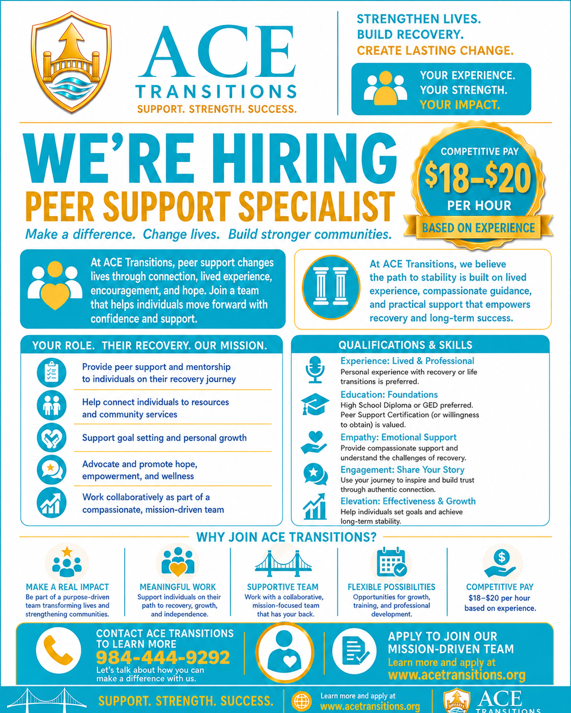
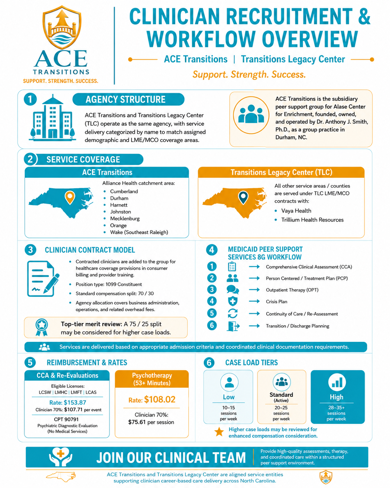
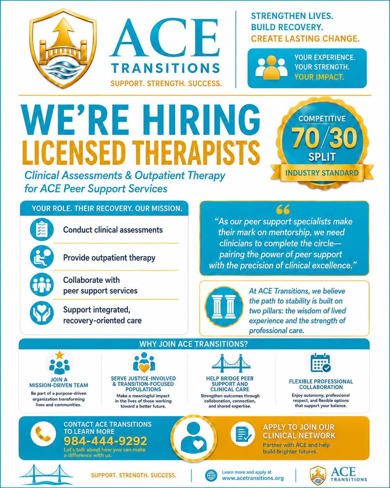

Join Our Team
Make a meaningful impact by helping others navigate life transitions through peer mentoring
Why Work at ACE Transitions ?
Are you passionate about making a difference in the lives of young adults? ACE Transitions is seeking compassionate and driven individuals to join our team as Peer Support Specialists, earning $18 - $20 per hour. This is more than a job it’s an opportunity to help young adults transition from challenging circumstances into thriving futures.
Meaningful Work
Help individuals transform their lives through mentoring and support during critical transitions.
Supportive Team
Work alongside passionate professionals who are committed to personal and professional growth.
Professional Development
Access ongoing training, certification programs, and career advancement opportunities.
Work-Life Balance
Flexible schedules, remote work options, and comprehensive benefits to support your well-being.
Current Open Positions
Explore opportunities to make a difference in our community
Peer Mentor
Part-time/Full-timeRemote, NC
Provide one-on-one and group mentoring support to individuals navigating life transitions, career changes, and personal growth.
- Must be a North Carolina Certified Peer Support Specialist (CPSS) with current certification issued by the NC Peer Support Specialist Program.
- Lived experience with mental health, substance use, justice involvement, or child welfare systems, and in active recovery for at least one year.
- High school diploma or equivalent (GED) required; additional education or training in human services, social work, or behavioral health preferred.
- Strong communication, boundary-setting, and active listening skills, with the ability to model recovery, resilience, and personal responsibility.
- Valid driver’s license and reliable transportation (if community-based services are required); ability to pass background and drug screening as applicable.
Apply Today
Ready to join our team? Fill out the application form below and we'll be in touch soon.
Application Instructions
- Complete all required fields in the form
- Upload your resume and cover letter
- Include references if available
- Review your application before submitting
We typically respond within 3-5 business days.
Infographics



Equal Opportunity Employer
ACE Transitions is an equal opportunity employer committed to diversity, equity, and inclusion. We welcome applications from all qualified individuals regardless of race, color, religion, gender, sexual orientation, age, national origin, disability status, or veteran status.